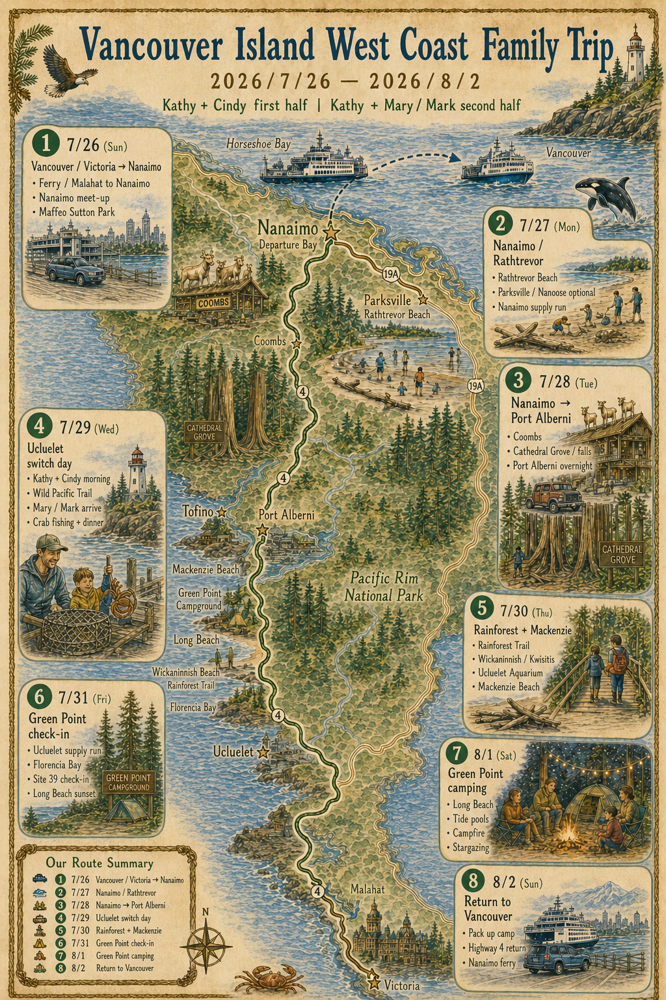

Mary / Mark 版行程
2026/7/29（Wed）— 2026/8/2（Sun）
Mary / Mark 从 Metrotown 出发加入后半段行程，和 Kathy 家在 Ucluelet 汇合，之后一起完成 Ucluelet 住宿、Pacific Rim / Long Beach、Green Point 露营和返程。

行程简介
7/26–7/28 前半段由 Kathy 家和 Cindy 家先出发，在 Nanaimo 汇合，并经 Nanaimo、Parksville / Rathtrevor、Coombs、Port Alberni 慢慢西进。Mary / Mark 不参加前半段。
7/29 是汇合日：Kathy 家从 Port Alberni 进入 Ucluelet；Mary / Mark 从 Metrotown 出发，经 Horseshoe Bay ferry 到 Nanaimo，再开车到 Ucluelet 汇合。
Mary / Mark 主路线
Metrotown → Horseshoe Bay → BC Ferry → Nanaimo / Departure Bay → Port Alberni → Highway 4 → Ucluelet → Pacific Rim / Long Beach → Green Point Campground → Nanaimo Ferry → Vancouver
住宿结构
| 日期 | Base | 晚数 | 内容 |
|---|---|---|---|
| 7/29–7/31 | Ucluelet | 2 晚 | Airbnb：Home in Ucluelet 地址：875 Barkley Place Check-in：7/29 16:00 Checkout：7/31 11:00 |
| 7/31–8/2 | Green Point Campground | 2 晚 | Pacific Rim - Green Point Site 39 Large Tent；Party Size：6 guests Check-in：7/31 14:00；Checkout：8/2 11:00 |
Day 4｜7/29（Wed）
Metrotown → Ucluelet｜汇合日
今日主题
Mary / Mark 从 Metrotown 出发，坐 ferry 到 Nanaimo，再经 Port Alberni / Highway 4 开到 Ucluelet，与 Kathy 家汇合。下午入住 Ucluelet Airbnb，安排钓螃蟹和轻松晚饭。
Mary / Mark ferry 节奏
Mary / Mark 的 7/29 ferry 已购买；当前文件待补录确认单上的具体出发时间和 booking reference。节奏上仍按中午前后抵达 Nanaimo / Departure Bay 处理，之后开车进 Ucluelet，下午 15:30–16:30 抵达比较稳。
简要安排
| 时间 | 行程 |
|---|---|
| 07:45–08:00 | Mary / Mark 从 Metrotown 出发，前往 Horseshoe Bay |
| 08:45–09:00 | 抵达 Horseshoe Bay，预留上船缓冲 |
| 待补录 | 已购买 ferry：Horseshoe Bay → Nanaimo / Departure Bay |
| 中午前后 | 抵达 Nanaimo / Departure Bay，开始向 Ucluelet 方向开 |
| 13:00–14:00 | Port Alberni 附近午饭 / 加油 / 补给 |
| 15:30–16:30 | 抵达 Ucluelet，与 Kathy 家汇合 |
| 16:00 后 | 入住 Ucluelet Airbnb：875 Barkley Place |
| 16:30–17:30 | 处理螃蟹 / 简单休整 |
| 18:00–19:30 | Ucluelet 晚饭 / 自煮螃蟹 |
| 19:30 后 | 住宿休息，进入后半段节奏 |
核心地点
- Metrotown
- Horseshoe Bay Ferry Terminal
- Nanaimo / Departure Bay Ferry Terminal
- Port Alberni
- Highway 4
- Ucluelet
- 875 Barkley Place Airbnb
Day 5｜7/30（Thu）
Tofino Town + Mackenzie Beach + Chesterman Beach
今日主题
Mary / Mark 完整加入后的第一整天。这天不赶 Rainforest / Kwisitis，改成 Tofino 小镇 + Mackenzie Beach + Chesterman Beach 的海滩日。Chesterman 只看一段 golden-hour 氛围，不等到很晚的完整 sunset。
路线
875 Barkley Place → Tofino Town → Mackenzie Beach → Chesterman Beach → 875 Barkley Place
简要安排
| 时间 | 行程 |
|---|---|
| 08:30–10:00 | 早餐，慢慢整理出门，不赶 Rainforest |
| 10:00–11:00 | Ucluelet → Tofino 小镇 |
| 11:00–13:00 | Tofino 小镇午饭 / 咖啡 / 短逛 / 轻量补给 |
| 13:00–13:20 | 前往 Mackenzie Beach |
| 13:20–15:30 | Mackenzie Beach：玩沙、看海、轻量 beach time，不下水追浪 |
| 15:30–16:30 | 车上休息 / snack / 视孩子状态短暂缓冲 |
| 16:30–18:00 | Chesterman Beach：玩沙、散步、看冲浪 |
| 18:00–18:30 | Chesterman Beach：看一段 golden-hour 氛围，不等到 21:08 完整 sunset |
| 18:30–19:00 | 返回 Ucluelet |
| 19:00–20:00 | Ucluelet 晚饭：Currents / Black Rock 可预约；也可外带、超市或住宿简单吃 |
| 20:00 后 | 回住宿，整理第二天露营装备 |
核心地点
- Tofino Town
- Mackenzie Beach
- Chesterman Beach
- Ucluelet town
- 875 Barkley Place Airbnb
Day 6｜7/31（Fri）
Ucluelet → Green Point Campground
今日主题
搬营日，第一优先级是退房、Rainforest Trail 一个 loop、14:00 Green Point check-in、搭帐篷和建立孩子睡觉环境。不再把 Florencia Bay / South Beach / Kwisitis 排成硬任务。
路线
875 Barkley Place → Rainforest Trail → Green Point Campground
简要安排
| 时间 | 行程 |
|---|---|
| 08:30–10:00 | 早餐，退房，整理露营装备和当天随身包 |
| 10:00–10:30 | Ucluelet 最后一轮轻补给：食物、冰、水、燃料、孩子用品 |
| 10:30–11:15 | 前往 Rainforest Trail |
| 11:15–12:15 | Rainforest Trail，只走一个 loop，控制 45-60 分钟 |
| 12:15–13:15 | 简单午饭 / picnic / 车上轻食 |
| 13:15–14:00 | 前往 Green Point Campground |
| 14:00–15:30 | Check-in，进入 Site 39，搭帐篷，先建立睡觉和厨房环境 |
| 15:30–17:00 | 熟悉营地，孩子活动；不再强行加景点 |
| 17:00–18:30 | 营地晚饭 |
| 18:30–20:30 | Long Beach sunset / campfire |
| 20:30–21:30 | 洗漱，孩子入睡 |
| 22:00 后 | 星空 / 月光营地 / 短延时尝试 |
核心地点
- Ucluelet 补给
- Rainforest Trail
- Green Point Campground
- Site 39
- Long Beach
- Campfire / sunset
Day 7｜8/1（Sat）
Green Point Camping Day
今日主题
完整露营日，上午轻量去 Wickaninnish Beach / Kwisitis Visitor Area，South Beach Trail 作为同一区域的可选短步道；中午回 Green Point / Long Beach 一带午饭和午睡；下午保留 Long Beach、tide pools、campfire、星轨 / 延时摄影。
路线
Green Point Campground → Wickaninnish Beach / Kwisitis Visitor Area → South Beach Trail 可选 → Green Point Campground → Long Beach / tide pools
简要安排
| 时间 | 行程 |
|---|---|
| 08:00–09:30 | 营地早餐，慢慢起床 |
| 09:30–10:45 | Wickaninnish Beach / Kwisitis Visitor Area：看海、看浪、游客中心 |
| 10:45–11:30 | South Beach Trail 可选短步道；孩子累就跳过 |
| 11:30–12:00 | 返回 Green Point / Long Beach 一带 |
| 12:00–12:45 | 营地午饭 / 简单热食 |
| 12:45–15:00 | 午睡 / 安静时间 |
| 15:00–16:30 | Long Beach / tide pools / 海边短停 / 轻量观察，不带走海产 |
| 16:30–17:30 | 回营地休整，准备晚饭 |
| 17:30–19:00 | 营地晚饭 |
| 19:00–20:30 | Campfire / Long Beach sunset |
| 20:30–21:30 | 洗漱，孩子入睡 |
| 22:00 后 | 星空延时 / 星轨 / 月光营地照 |
核心地点
- Green Point Campground
- Wickaninnish Beach
- Kwisitis Visitor Area
- South Beach Trail 可选
- Long Beach
- Tide pools / beach exploration
- Campfire
- Stargazing / star trail / time-lapse
Day 8｜8/2（Sun）
Green Point → Nanaimo → Vancouver
今日主题
收营返程，不安排重景点。
路线
Green Point → Port Alberni → Coombs / Nanaimo → Ferry → Vancouver
简要安排
| 时间 | 行程 |
|---|---|
| 07:30–08:30 | 营地早餐 |
| 08:30–10:30 | 收帐篷、打包装备、整理营地 |
| 10:30–11:00 | 最后检查，完成 check-out |
| 11:00–13:00 | 沿 Highway 4 原路返回 Port Alberni / Coombs 方向 |
| 13:00–14:30 | Coombs / Port Alberni 午饭休整，视孩子状态决定 |
| 14:30–15:15 | 前往 Nanaimo ferry terminal |
| 16:00–17:42 | BC Ferry：Nanaimo (Departure Bay) → Vancouver (Horseshoe Bay)，Booking reference：B264549198 |
| 晚上 | 回家，结束行程 |
核心地点
- Green Point Check-out
- Highway 4 原路返回
- Port Alberni / Coombs 休整
- Nanaimo Ferry
- Vancouver
餐厅 / 食物候选
| 区域 | 候选 |
|---|---|
| Port Alberni | Emiliano's Authentic Mexican Food / 简单午饭 / 加油补给 |
| Ucluelet | Currents Restaurant / Black Rock 可预约；镇上外带 / 自煮海鲜 / 超市补给作为降级方案 |
| Tofino | Tofino 小镇午饭 / 咖啡 / Chocolate Tofino 可选 |
| Green Point | 营地晚饭：hot dog、pasta、soup、rice bowl、sandwich、热巧克力 |